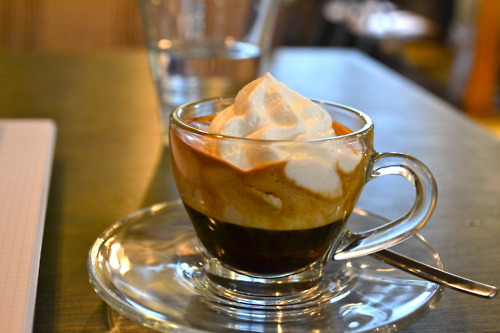
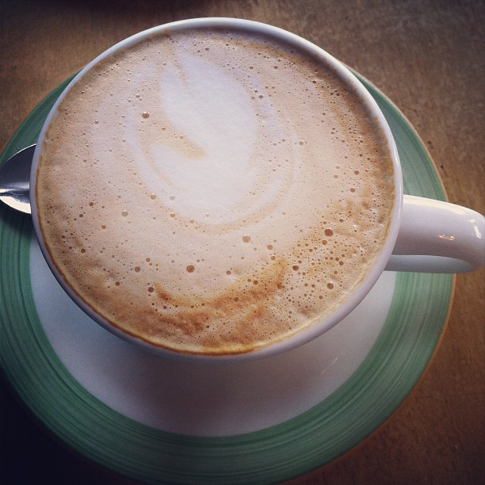

Feature the different Kinds of Coffee
Espresso Con Pana

Espresso con panna, which means "espresso with cream" in Italian, is a single or double shot of espresso topped with whipped cream. In the United States it may also be called café Vienne. In France and in the United Kingdom it's called café Viennois.
Cafe Breve

Caffe Breve is an American variation of a latte: a milk-based espresso drink using steamed half-and-half mixture of milk and cream instead of milk.
Americano
Caffè Americano is a style of coffee prepared by brewing espresso with added hot water, giving it a similar strength to, but different flavor from drip coffee.
Latte Machiato
Latte macchiato is a coffee beverage; the name literally means stained milk. This refers to the method of preparation, wherein the milk is "stained" by the addition of espresso.
Flat White
A flat white is an espresso based coffee beverage. The beverage is prepared by pouring microfoam over a shot of espresso